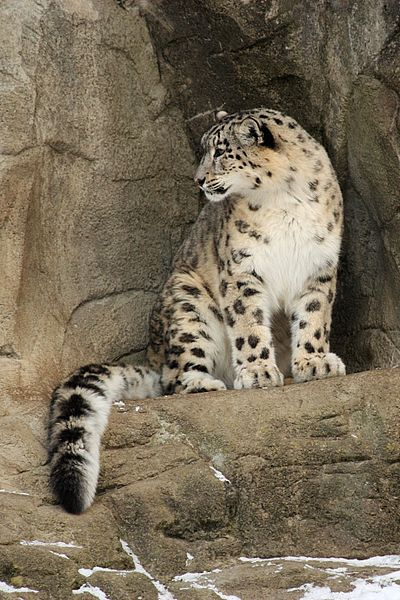
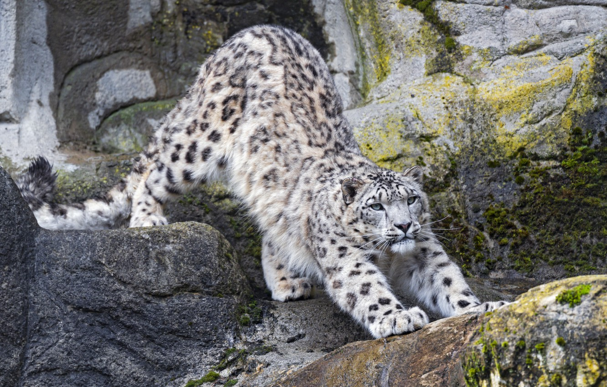

Ирбис
И́рбис или сне́жный барс, или снежный леопард(лат. Panthera uncia, ранее — лат. Uncia uncia) — крупное хищное млекопитающее семейства кошачьих, обитающее в горах Центральной Азии. Единственный современный представитель семейства, проживающий исключительно в холодном климате.
Ирбис отличается тонким, длинным, гибким телом, относительно короткими лапами, небольшой головой и очень длинным хвостом. Достигая вместе с хвостом длины 200—230 см, имеет массу до 55 кг. Окраска меха светлая дымчато-серая с кольцеобразными и сплошными тёмными пятнами.
В силу труднодоступности местообитания и низкой плотности вида до сих пор остаются малоисследованными многие аспекты его биологии.
Хвост очень длинный, превышает три четверти длины тела, покрыт длинными волосами и потому кажется очень толстым (зрительно его толщина почти равна толщине предплечья ирбиса). Служит балансиром при прыжках. Конечности относительно короткие. Лапы ирбиса широки и массивны. Когти на лапах втяжные. Следы большие, круглые, без отметин от когтей.
Снежный барс, в отличие от других больших кошек, не может рычать, несмотря на неполное окостенение подъязычной кости, которая, как считалось, и позволяет большим кошкам рычать. Новые изучения показывают, что способность рычать у кошачьих обусловливается другими морфологическим особенностям гортани, которые отсутствуют у снежного барса. Несмотря на строение гиоидного аппарата как у больших кошек (Panthera), призывного «рёва-рычания» нет. «Мурлыканье» происходит как при вдохе, так и при выдохе — как у мелких кошек (Felis). Способы разрывания добычи — как у больших кошек, а положение при еде — как у мелких.
